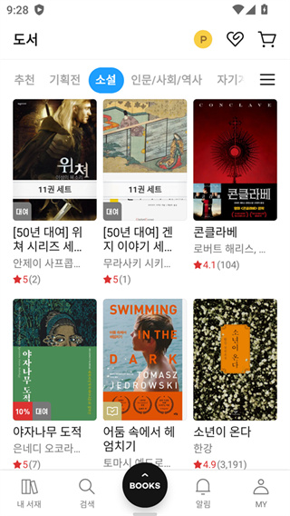

Ridibooks 上手一周：韩语数字内容平台到底值不值得掏钱包
第一次碰韩国数字阅读平台，从注册到订阅到踩坑，聊一聊 Ridi Select、Manta 和充值那些真实体验。
说实话，我之前对韩国数字内容平台没什么概念——直到被朋友安利了几部 webtoon，国内几个平台要么找不到要么翻译质量感人，才抱着试试看的心态通过官方下载装了Ridibooks官网。这一周用下来，感受挺复杂的：既有让我惊喜的细节设计，也有让我拍脑袋骂娘的操作逻辑。
第一次打开：界面和注册
Ridi 的界面第一眼是那种典型的韩国 app 风格——卡片式布局、配色偏冷、字体偏小但信息密度高。注册支持邮箱和 Google/Apple 登录，海外用户直接用邮箱就能搞定，不需要韩国手机号。唯一让我愣了一下的是界面语言——默认是韩语，要在设置里手动切到英文。中文界面官方不支持，不过英文对于大部分海外用户来说已经够用了。

注册完进来，首页给我推的都是热门 webtoon 和网络小说。我冲着几部 webtoon 来的，随手点开一部就被引导去看 Ridi Select——它家的订阅服务。
Ridi Select：核心功能体验
Ridi Select 大概相当于 Ridi 版的 Kindle Unlimited 或者 Netflix——每月付一笔钱，就能把 Select 覆盖范围内的作品加到 My Select 书架上，然后离线下载慢慢看。价格是每月 4900 韩元，按汇率大概五块多美元，说实话不贵。
My Select 书架：好用但有门槛
My Select 是订阅用户的专属书架，操作逻辑很直观：打开作品详情页，点一下「添加到 My Select」就进书架了，然后在 App、PC 阅读器或者 Web 端都能同步阅读。实际用下来体验挺丝滑的——手机上看到一半切到电脑继续，进度自动同步，比国内某些平台强多了。
但这里有两个硬伤让我有点不爽。第一是设备数上限——最多 5 台设备，超过就不让登了。我自己有俩手机一台平板一台笔记本再加一个 Web 标签页，差一点就顶到上限了。更离谱的是这个限制只针对 Select 订阅，买断的作品反而没设备限制。这个逻辑我到现在也没完全想明白。
第二是订阅取消后书架直接清空。我一开始以为取消后之前加的作品至少能留个标记或者历史记录，结果是啥都没了。不过话说回来，买断的作品确实不受影响——这一点得给 Ridi 点个赞，毕竟国内某些平台连买断作品都搞云控。
离线下载：支持断点续传
下载功能意外地让我惊喜。弱网环境下下载到一半断了，恢复网络后重新点下载会从断点继续，不用从头来。这点细节做得比很多平台都好。下载速度也不慢，一部 100MB 左右的 webtoon 大概两三分钟就能下完。
不过下载失败的时候排查起来有点烦。错误提示大多是乱码或者韩语，海外用户看得一头雾水。我第一次下载失败了，试了清缓存、换网络、甚至换设备，最后发现是存储空间不够——设备只剩不到 500MB 了。清理了一下就好了，Ridi 的日志提示真的该优化一下。
Manta.net：海外用户的福音
聊到 Ridibooks 就绕不开 Manta——Ridi 面向海外市场推出的英文 webtoon 平台。说实话，如果只是想看 webtoon 而且完全不想碰韩语，Manta 比主站友好太多了。
全英文界面、直接用 Visa/Master 支付、美元计价 $6.99/月。我试了几天，内容跟主站基本同步，热门作品都有英文翻译。最大的好处是注册了独立账号，跟主站不互通——这意味着你可以一个账号给老婆用、一个账号自己用，互不干扰。
但 Manta 只做 webtoon。如果你还想看网络小说、电子书、甚至传统漫画，Manta 帮不了你。而且它只覆盖 webtoon 品类，内容深度跟主站比还是有差距的。$6.99/月也比主站 Select 的约 $5 贵了差不多一半。选哪个其实看你到底想看什么、能接受多大的语言门槛。
充值 Ridi Cash：最容易踩坑的环节
Ridi Cash 是 Ridi 的虚拟货币，买断作品、租借、订阅都能用来付。充值本身不难，但里面的门道挺多的。
最划算的策略是每月 1~3 日充值——这三天充值的奖励积分翻倍。普通时候充 10000 韩元大概多送 1000，这三天充同样的钱能多送 2000。我一开始不确定这个双倍窗口是不是长期活动，后来翻了翻Ridibooks文档才确认这是固定福利。周优惠券也别忘领，每周三张 10% 折扣券，无脑叠加 Cash 支付，相当于双重优惠。
海外用户充值的话，直接走 Ridi 官方网站用海外信用卡付最稳。App 内购的价格通常比官网贵一截——Apple 和 Google 都要抽成。有一次我图省事直接在 App 里充，比官网多花了将近 15%，心疼了好一阵。
适合谁 / 不适合谁
适合人群很明确：想看韩语 webtoon 或网络小说、能接受英文界面（或愿意配合浏览器翻译）、愿意花小钱省麻烦的读者。Ridi 的内容库体量很大，热门作品基本都能找到，订阅价格也不贵。
不太适合的人：完全不想碰韩语内容、只想看纯英文 webtoon 的（直接去 Manta 或者 Webtoon 官方更直接）；对买断 vs 订阅纠结、想把下载的作品导出成自己文件的（Ridi 不支持任何格式导出）；以及习惯了国内平台那种无限制多设备登录的重度用户。
总的来说，这一周用下来我是挺佩服 Ridi 在内容体验上的打磨——同步速度、离线下载、My Select 书架这些细节都做得很扎实。但设备数限制、订阅取消即清空、海外用户充值路径曲折这些点，也确实暴露了它作为韩国本土平台对海外用户的不够友好。值不值得掏钱包？如果你真的在追几部韩国 webtoon 或者小说，Ridi Select 的性价比摆在那；如果只是偶尔看看，可能 Manta 的轻量方案更适合。